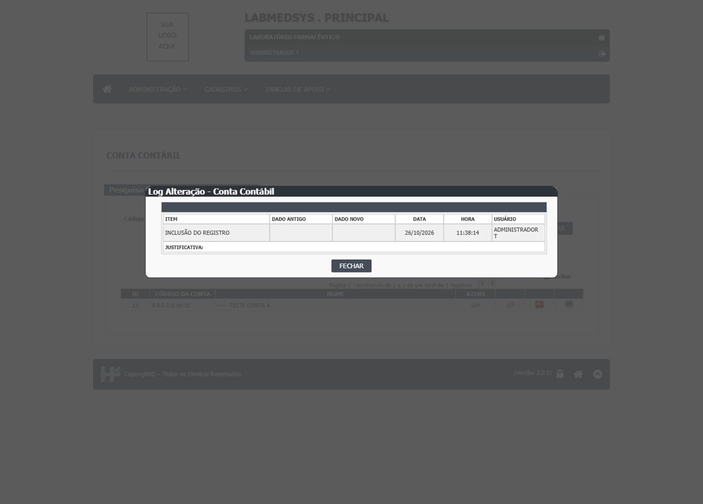
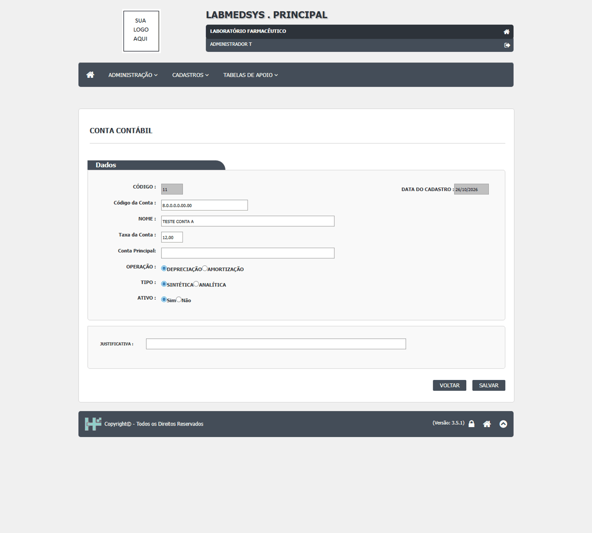
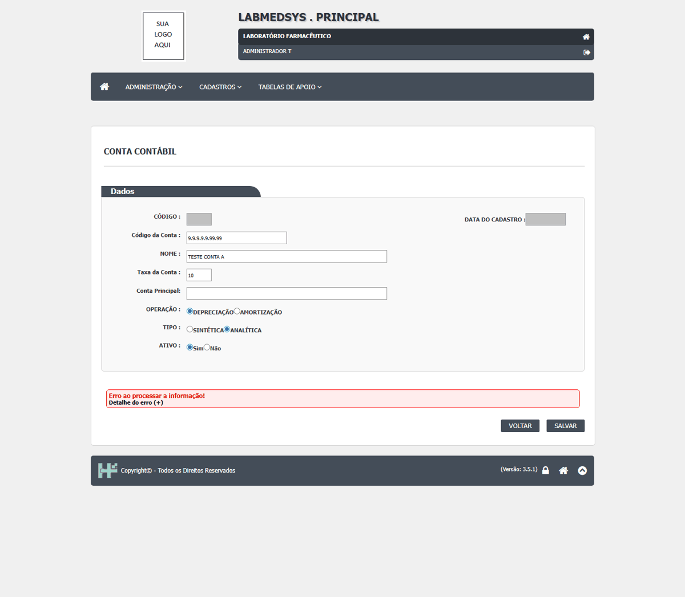
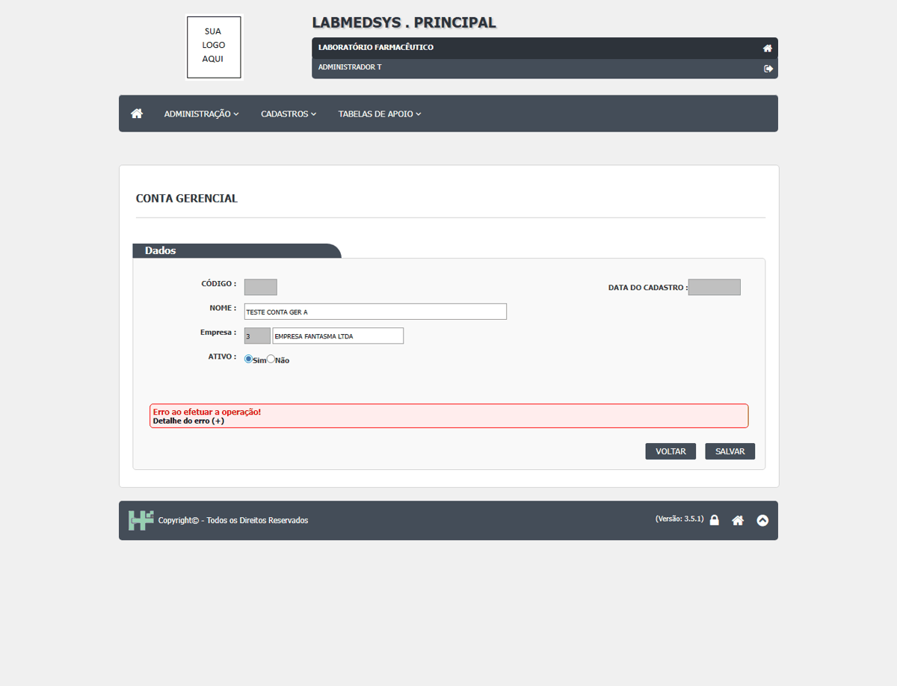
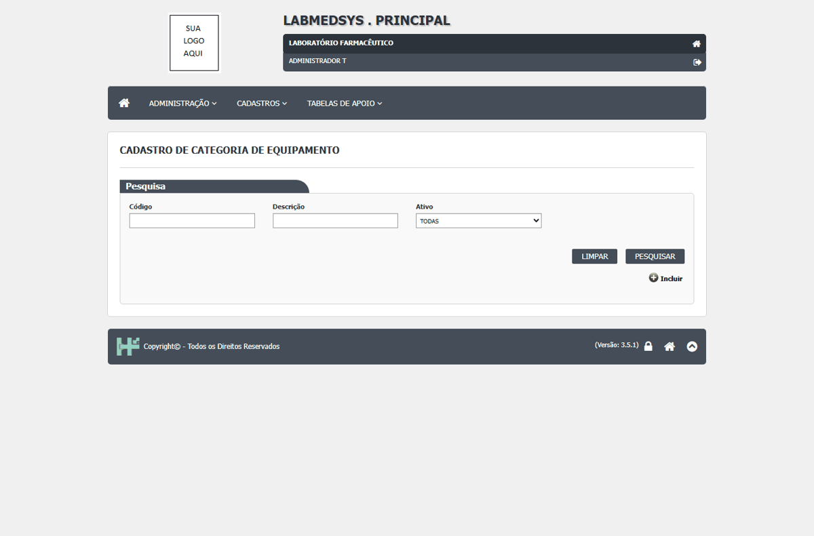
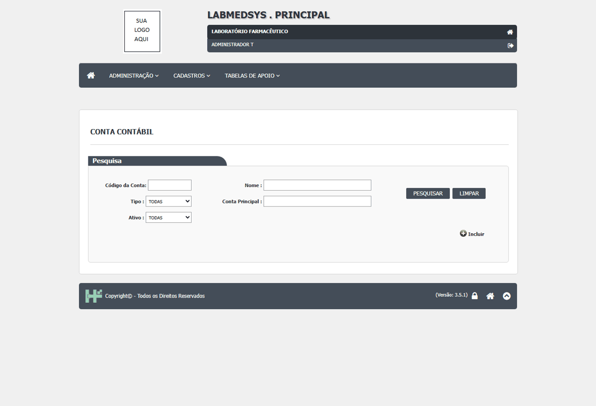

DV-PRI-047 · Conta contábil: as alterações não aparecem no histórico (Ver Log só mostra a inclusão)
A Conta contábil cobra justificativa na alteração e mostra "Alteração realizada com sucesso!", mas o histórico (Ver Log) continua só com a linha "INCLUSÃO DO REGISTRO" (justificativa em branco). Foram feitas quatro alterações (nome e três mudanças de taxa, com justificativa); nenhuma foi registrada. A taxa gravada mudou de verdade (de 10 para 12). Conta gerencial, Local físico, Grau de contaminação e os outros cadastros registram a alteração.
Como reproduzir o erro, passo a passo
- Abrir Cadastros › Conta contábil, pesquisar TESTE CONTA A, Editar.
- Mudar a taxa para 12, preencher a justificativa e SALVAR (SIM).
- Voltar à lista e clicar em Ver Log Alteração da conta.
Esperado
Linha de histórico com TAXA antiga e nova, usuário, data, hora e a justificativa.
Obtido
Só a linha de inclusão; a taxa mudou sem registro.
Evidência (captura da tela)


DV-PRI-042 · Conta contábil do tipo Analítica não grava; várias recusas só dizem "Erro ao processar a informação!"
Em Conta contábil, três tentativas de incluir uma conta **Analítica** (com e sem Conta principal, códigos diferentes, nomes novos) terminaram em **"Erro ao processar a informação!"**; a Sintética gravou. O mesmo texto aparece quando o código repetido é recusado. Em Conta gerencial, o nome repetido é recusado com "Erro ao efetuar a operação!". Em nenhum caso a mensagem diz o motivo.
Como reproduzir o erro, passo a passo
- Abrir Cadastros › Conta contábil, Incluir, código 8.1.0.0.0.00.00, nome novo, taxa 10, operação Depreciação, tipo Analítica, SALVAR, SIM.
- Repetir com tipo Sintética e um código já usado.
Esperado
Conta analítica gravada (ou mensagem dizendo o que falta) e recusa de repetido com frase própria.
Obtido
"Erro ao processar a informação!" (sem o motivo).
Evidência (captura da tela)


DV-PRI-041 · Categoria de equipamento e Conta contábil aceitam o mesmo nome em dois registros
Foram gravadas duas categorias `TESTE CATEGORIA A` (códigos 8 e 9) e duas contas contábeis `TESTE CONTA A` (IDs 10 e 11, códigos diferentes). Quem escolhe numa lista (equipamento, conta principal) não sabe qual é qual. Centro de custo, Conta gerencial e Grupo de usuários, ao contrário, recusam o nome repetido. Mesmo problema do DV-PRI-007 (Ambientes).
Como reproduzir o erro, passo a passo
- Incluir a categoria (ou conta) com um nome.
- Incluir outra com o mesmo nome.
- Pesquisar o nome.
Esperado
Recusa do nome repetido, se a área confirmar a regra.
Obtido
Gravou as duas.
Evidência (captura da tela)

DV-PRI-048 · Conta contábil aceita taxa de 150 e taxa negativa
Na edição da conta contábil, as taxas `150` e `-5` foram aceitas com "Alteração realizada com sucesso!". Uma taxa de depreciação negativa ou acima de 100% não faz sentido; o sistema não recusa nem avisa. A faixa válida é um ponto a validar com a área.
Como reproduzir o erro, passo a passo
- Abrir a edição de TESTE CONTA A.
- Taxa 150, justificativa, SALVAR, SIM.
- Repetir com -5.
Esperado
Recusar taxa fora da faixa definida pela área.
Obtido
Aceitou as duas.
Evidência (captura da tela)

